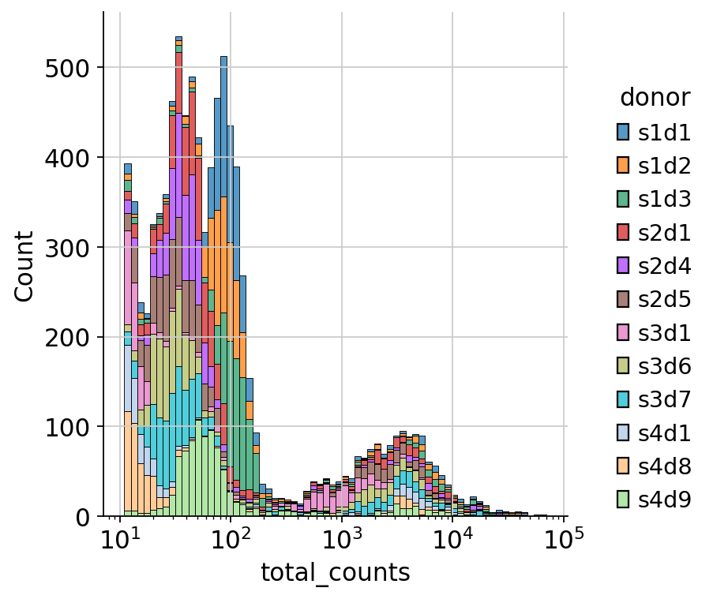
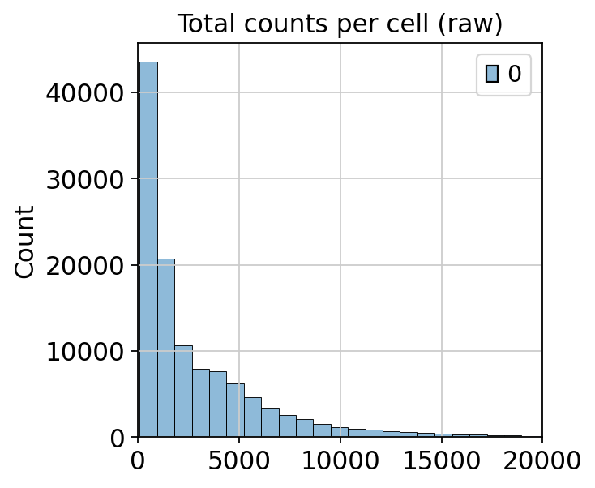
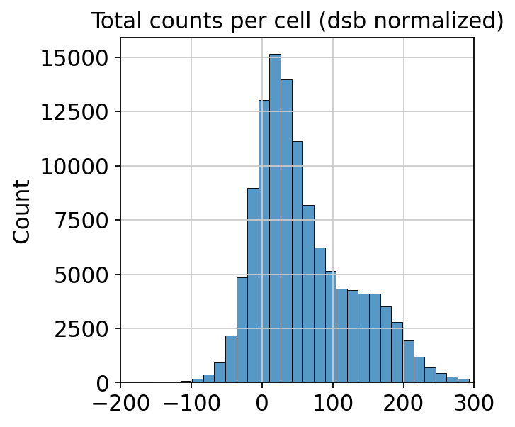
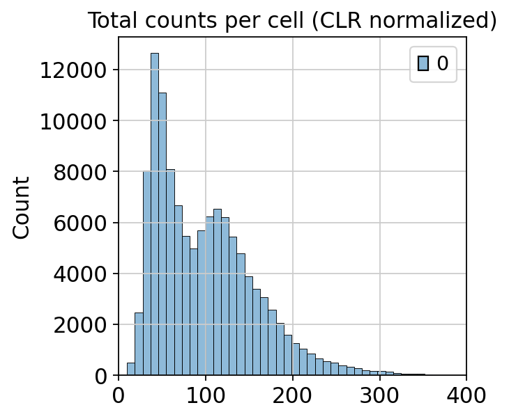

35. 归一化#
关键要点
CITE-seq 中的 ADT 数据需要用 CLR 或 dsb 等归一化方法来去除噪声；其中 dsb 利用来自空液滴和同型对照（isotype control）的信息，去除环境噪声和技术噪声。
环境设置
安装 conda:
在创建环境之前，请确保 conda 已安装在您的系统中。
保存 yml 内容:
将 yml 选项卡中的内容复制到名为
environment.yml的文件中。
创建环境:
打开终端或命令提示符。
运行以下命令：
conda env create -f environment.yml
激活环境:
创建好环境后，使用以下命令激活它：
conda activate <environment_name>
替换
<environment_name>，名称就是在environment.yml文件中指定的那个。在 yml 文件里，它看起来像这样：name: <environment_name>
验证安装:
通过运行以下命令，检查环境是否创建成功：
conda env list
name: surface-protein
channels:
- conda-forge
dependencies:
- python=3.13
- scanpy=1.12
- muon=0.1.7
- python-igraph=1.0.0
- ipykernel=7.2.0
- pip==26.0.1
- pip:
- lamindb==2.3.1
- harmonypy==0.0.9
获取数据和笔记本
本书使用 lamindb，并通过 theislab/sc-best-practices 实例 来存储、共享和加载数据集与笔记本。感谢 Lamin Labs 提供免费托管服务。
安装 lamindb
安装 lamindb Python 软件包：
pip install lamindb
可选择创建 lamin 账户
按照以下 说明 注册并登录。
验证你的设置
运行
lamin connect命令：
import lamindb as ln ln.Artifact.connect("theislab/sc-best-practices").df()
你现在应该看到最多 100 个存储的数据集。
访问数据集（Artifact）
在 Artifacts 页面 搜索该数据集。
加载一个 Artifact 及其对应的对象：
import lamindb as ln af = ln.Artifact.connect("theislab/sc-best-practices").get(key="key_of_dataset", is_latest=True) obj = af.load()
该对象现在已可在内存中访问，并可用于分析。请调整
ln.Artifact.connect("theislab/sc-best-practices").get("SOMEIDXXXX")后缀以获取相应的版本。访问笔记本（Transform）
在 Transforms 页面 搜索该笔记本。
加载笔记本：
lamin load <notebook url>
这会把笔记本下载到当前工作目录。与
Artifacts类似，你可以调整后缀 ID 来获取旧版本。
35.1. 动机#
与 scRNA-seq 数据类似，ADT 数据也包含需要去除的噪声。噪声主要来自三方面：1）细胞之间的测序深度差异；2）抗体的非特异性结合；3）环境（ambient）噪声。我们希望用归一化方法去除这些噪声来源。
与 UMI 计数服从负二项分布不同，ADT 数据更不稀疏：它有一个对应非特异性抗体结合的负峰，以及一个类似于特定细胞表面蛋白富集的正峰[Zheng et al., 2022]。由于生物物理特性的差异，捕获效率因细胞而异。又因为 CITE-seq 实验是针对预先选定的特征进行富集的，组成性偏差（compositional bias）会更严重。
与 scRNA-seq 数据类似，有许多实现归一化的方法。我们涵盖两种最广泛使用的方法。
对 ADT 数据进行归一化的传统方法（我们在本归一化笔记本末尾会介绍）是使用中心化对数比（Centered Log-Ratio，CLR）变换 [Stoeckius et al., 2017]。不过，现在出现了一种专门为应对该模态所带来的挑战而设计的低层归一化新方法：dsb（denoised and scaled by background，即“去噪并按背景缩放”） [Mulè et al., 2022]。dsb 归一化可以消除两种噪声：
首先，dsb 归一化利用空液滴来估计并去除环境噪声。这种环境噪声来自溶液中游离的、实际上并不属于任何细胞的蛋白。这些蛋白通常是破损细胞产生的细胞碎片，被认为属于“环境（ambient）”的一部分。通过测量空液滴中的 ADT 计数，dsb 为每种抗体建模其环境蛋白水平，并从含细胞的液滴中减去这一背景。
其次，dsb 归一化利用同型对照（isotype control）来去除非特异性结合带来的噪声。同型对照是会非特异性地结合到许多蛋白上的抗体。随后，这一信息被用来校正由非特异性相互作用产生的噪声。
35.2. 环境设置#
import warnings
import matplotlib.pyplot as plt
import muon as mu
import pandas as pd
import scanpy as sc
import seaborn as sns
warnings.filterwarnings("ignore")
mu.set_options(pull_on_update=False)
sc.settings.verbosity = 0
sc.set_figure_params(dpi=80, facecolor="white", frameon=False)
import lamindb as ln
ln.track()
→ connected lamindb: theislab/sc-best-practices
→ loaded Transform('Z95qTilYUzGh0002', key='normalization.ipynb'), re-started Run('Ygjmj9z9STgZ7fVF') at 2026-04-10 16:46:01 UTC
→ notebook imports: lamindb==2.2.1 matplotlib==3.10.3 muon==0.1.6 pandas==2.3.1 scanpy==1.11.3 seaborn==0.13.2
• recommendation: to identify the notebook across renames, pass the uid: ln.track("Z95qTilYUzGh")
35.3. 加载数据#
我们载入在上一章末尾保存的 MuData 对象 质量控制:
af = ln.Artifact.connect("theislab/sc-best-practices").get(
key="surface-protein/cite_quality_control.h5mu",
is_latest=True,
)
mdata = af.load()
mdata
MuData object with n_obs × n_vars = 118563 × 36741
var: 'gene_ids', 'feature_types'
2 modalities
rna: 118563 x 36601
obs: 'donor', 'batch'
var: 'gene_ids', 'feature_types'
prot: 118563 x 140
obs: 'donor', 'batch', 'n_genes_by_counts', 'log1p_n_genes_by_counts', 'total_counts', 'log1p_total_counts', 'n_counts', 'outliers'
var: 'gene_ids', 'feature_types', 'n_cells_by_counts', 'mean_counts', 'log1p_mean_counts', 'pct_dropout_by_counts', 'total_counts', 'log1p_total_counts'接下来，我们再载入包含空液滴的未过滤数据，用于 dsb 归一化。
mdata_raw 包含带有全部液滴的未过滤 MuData 对象；而 mdata 包含通过 CellRanger 过滤以及我们质量控制的条形码。原始对象包含超过 2,400 万个液滴，而过滤后的对象只包含 118,563 个。
af_raw = ln.Artifact.connect("theislab/sc-best-practices").get(
key="surface-protein/cite_raw.h5mu",
is_latest=True,
)
mdata_raw = af_raw.load()
mdata_raw
MuData object with n_obs × n_vars = 24807643 × 36741
var: 'gene_ids', 'feature_types'
2 modalities
rna: 24807643 x 36601
obs: 'donor', 'batch'
var: 'gene_ids', 'feature_types'
prot: 24807643 x 140
obs: 'donor', 'batch'
var: 'gene_ids', 'feature_types'35.4. dsb 归一化#
dsb 归一化 [Mulè et al., 2022] 在去除 ADT 数据噪声方面相当有效。不过，dsb 归一化需要另外两种数据来源：1）空液滴（在本教程中它们是 “cite_raw.h5mu” 数据集的一部分）；2）同型对照。如果这两种额外数据来源你都没有，就无法使用 dsb 归一化；这种情况下，我们建议使用 CLR 归一化，本归一化小节末尾会作介绍。如果你只有其中一种额外数据来源，就只能使用 dsb 归一化中的一个步骤（本教程不作介绍）。如果两种额外数据来源都有，就可以按本教程所述使用 dsb 归一化。
同型对照是会非特异性地结合到本研究所含细胞上的抗体，也就是说，你不会预期细胞之间在这些对照上存在显著的丰度差异。因此，我们可以利用同型对照的数值来对技术性差异进行归一化。
让我们先看看原始的 RNA 计数分布，以便判断哪些液滴是空液滴、哪些液滴确实含有细胞：
sc.pp.calculate_qc_metrics(mdata_raw["rna"], inplace=True, percent_top=None)
sns.displot(
mdata_raw["rna"]
.obs.sample(frac=0.01)
.query("total_counts<100000 and total_counts>10"),
x="total_counts",
log_scale=True,
hue="donor",
multiple="stack",
)
<seaborn.axisgrid.FacetGrid at 0x7fb4b6ff1340>
{kind=link}

10**1 到 10**2.1 之间的第一个大峰，由不含细胞的液滴组成。我们可以用这些液滴来做 dsb 归一化。在这种情况下，预处理软件（通常是 CellRanger）已经把含细胞的液滴区分出来，并归入过滤后的数据中，这里用 “mdata” 对象表示。而未过滤的数据（这里用 “mdata_raw” 对象表示）则包含所有液滴，既有含细胞的、也有不含细胞的。dsb 归一化将利用不含细胞的液滴来估计环境噪声，然后将其去除。
此外，我们现在还明确列出 dsb 归一化将用来去除非特异性结合噪声的那些同型对照。
isotype_controls = ["Mouse-IgG1", "Mouse-IgG2a", "Mouse-IgG2b", "Rat-IgG2b"]
mdata["prot"].layers["counts"] = mdata[
"prot"
].X.copy() # saving the raw data in a layer.
我们现在调用归一化函数 mu.prot.pp.dsb 传入过滤后的和原始的 MuData 对象，以及同型对照的名称。
mu.prot.pp.dsb(mdata, mdata_raw, isotype_controls=isotype_controls, random_state=0)
我们先来看看去噪和归一化之前的计数。
pd.Series(mdata["prot"].layers["counts"][:100, :100].toarray().flatten()).value_counts()
1.0 1090
0.0 1045
2.0 918
3.0 691
4.0 581
...
457.0 1
132.0 1
633.0 1
374.0 1
763.0 1
Name: count, Length: 524, dtype: int64
看看去噪和归一化之后，数值范围发生了怎样的变化。
pd.Series(mdata["prot"].X[:100, :100].flatten()).value_counts()
2.499493 1
1.607696 1
-0.490390 1
0.293146 1
-0.099488 1
..
-0.222091 1
-0.208290 1
2.531299 1
0.393625 1
-1.026347 1
Name: count, Length: 10000, dtype: int64
让我们看看每个细胞的蛋白质总数在 dsb 归一化前后的变化：
sns.histplot(mdata["prot"].layers["counts"].sum(axis=1), bins=50)
plt.title("Total counts per cell (raw)")
plt.xlim(0, 20000)
(0.0, 20000.0)
{kind=link}

在归一化前，许多细胞的蛋白质总数相当低，而一些细胞的蛋白质总数非常高。蛋白质总量的这些巨大差异，在很大程度上是由环境噪声和非特异性结合所驱动的。
sns.histplot(mdata["prot"].X.sum(axis=1), bins=50)
plt.title("Total counts per cell (dsb normalized)")
plt.xlim(-200, 300)
(-200.0, 300.0)
{kind=link}

在归一化后，总蛋白质计数的差异要小得多，（可能）由生物学驱动而不是由噪声驱动。
35.5. 中心化对数比（CLR）归一化#
如果你没有未过滤数据和/或同型对照可用，也可以用以下方法对 ADT 数据进行归一化 mu.prot.pp.clr，它实现的是中心化对数比（CLR）归一化。CLR 归一化是对 ADT 数据进行归一化的传统方法，最初在 CITE-seq 论文中提出 [Stoeckius et al., 2017].
CLR 归一化会校正细胞之间测序深度的差异，否则这种差异可能会主导下游分析。ADT 总计数较高的细胞可能显得人为地与众不同，导致生物学上相似的细胞在聚类时被分开。CLR 归一化在每个细胞内部重新标定蛋白表达，使各细胞的蛋白总计数更为接近。具体来说，它把每个蛋白计数除以该细胞中所有蛋白计数的几何平均值，再做对数变换。
mdata_clr_normalize = mdata.copy()
mdata_clr_normalize["prot"].X = mdata_clr_normalize["prot"].layers["counts"].copy()
现在我们通过使用函数来应用 CLR 归一化 mu.prot.pp.clr:
mu.prot.pp.clr(mdata_clr_normalize["prot"])
我们比较归一化前后的计数:
pd.Series(mdata["prot"].layers["counts"][:100, :100].toarray().flatten()).value_counts()
1.0 1090
0.0 1045
2.0 918
3.0 691
4.0 581
...
457.0 1
132.0 1
633.0 1
374.0 1
763.0 1
Name: count, Length: 524, dtype: int64
pd.Series(mdata_clr_normalize["prot"].X[:100, :100].toarray().flatten()).value_counts()
0.000000 1045
0.416372 33
0.366095 32
0.390344 30
0.429927 30
...
1.092080 1
1.682527 1
0.879271 1
3.436838 1
1.787327 1
Name: count, Length: 3593, dtype: int64
我们绘制每个细胞蛋白质总数分布图:
sns.histplot(mdata_clr_normalize["prot"].X.sum(axis=1), bins=50)
plt.title("Total counts per cell (CLR normalized)")
plt.xlim(0, 400)
(0.0, 400.0)
{kind=link}

CLR 归一化成功缩小了蛋白总计数的差异。蛋白总计数的范围为 0 到 350，这是合理的。如果把这个范围与原始数据中蛋白总计数差异的范围（从 0 到 20000）相比，可以看到 CLR 归一化缓解了其中一部分差异——而这些差异在很大程度上是由实验噪声造成的。
我们保存经 dsb 归一化的 CITE-seq 数据，因为在有同型对照和空液滴数据可用时，dsb 归一化是我们的首选方法。
af_normalization = ln.Artifact.from_mudata(
mdata,
key="surface-protein/cite_normalization.h5mu",
description="CITE-seq data after normalization",
)
af_normalization.save()
ln.finish()
35.6. 参考文献#
Matthew P. Mulè, Andrew J. Martins, and John S. Tsang. Normalizing and denoising protein expression data from droplet-based single cell profiling. Nature Communications, 13(11):2099, Apr 2022. doi:10.1038/s41467-022-29356-8.
Marlon Stoeckius, Christoph Hafemeister, William Stephenson, Brian Houck-Loomis, Pratip K. Chattopadhyay, Harold Swerdlow, Rahul Satija, and Peter Smibert. Simultaneous epitope and transcriptome measurement in single cells. Nature Methods, 14(9):865–868, Sep 2017. URL: https://doi.org/10.1038/nmeth.4380, doi:10.1038/nmeth.4380.
Ye Zheng, Seong-Hwan Jun, Yuan Tian, Mair Florian, and Raphael Gottardo. Robust normalization and integration of single-cell protein expression across cite-seq datasets. bioRxiv, 2022. URL: https://www.biorxiv.org/content/early/2022/05/01/2022.04.29.489989, arXiv:https://www.biorxiv.org/content/early/2022/05/01/2022.04.29.489989.full.pdf, doi:10.1101/2022.04.29.489989.
35.7. 贡献者#
我们衷心感谢以下人员的贡献：
35.7.2. 审阅者#
Lukas Heumos
Anna Schaar